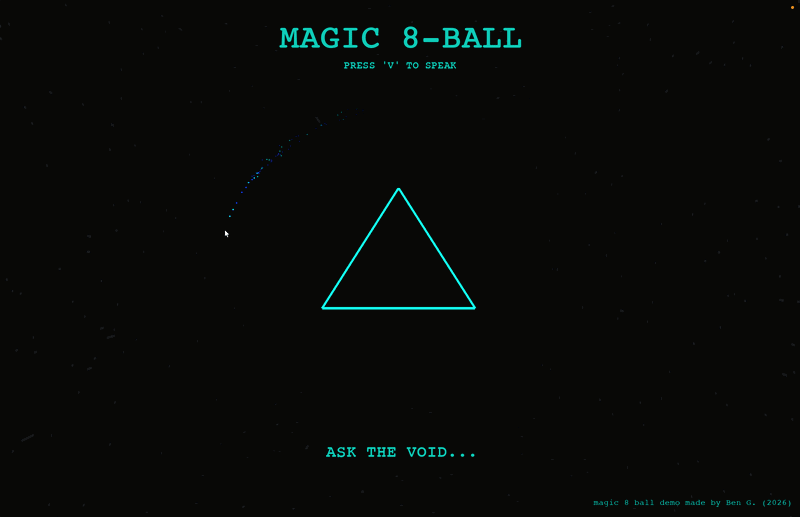
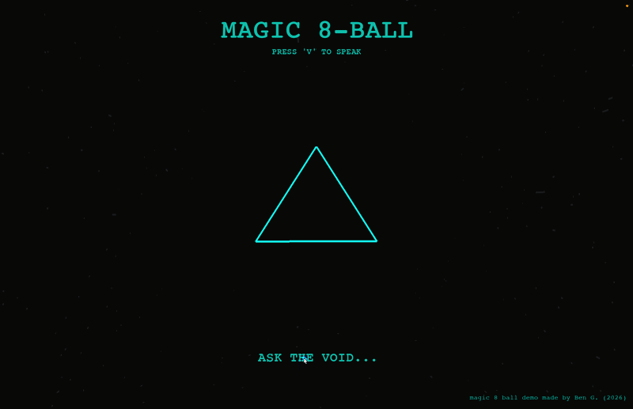
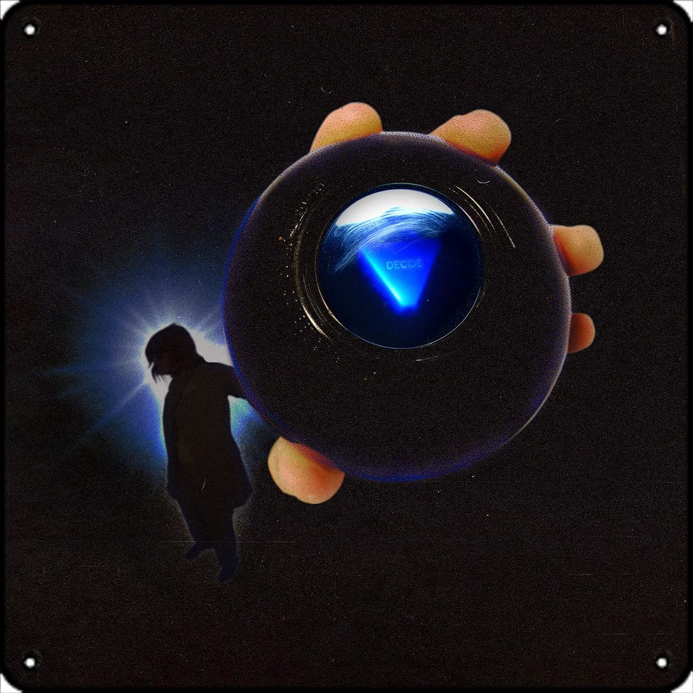

01. Magic 8-Ball in Python and OpenGL

// Initial system boot and UI initialization.
This project is a real-time, interactive 3D simulation that pushes Python beyond its typical use cases by integrating a low-level graphics pipeline with modern asynchronous features. The goal was to build a functional, retro-futuristic "Magic 8-Ball" that feels tactile and responsive. By utilizing PyOpenGL, I was able to experiment with lighting, particle emitters, and real-time physics, moving away from simple 2D UI libraries like Tkinter into the world of 3D graphics and spatial rendering. It serves as a core proof of concept for handling multiple data streams—graphics, physics, and voice recognition—within a single, fluid application loop.
State: Voice recognition active

State: 60FPS physics loop and starfield
Technical Implementation
The engineering behind this project focused on maintaining a high-performance graphics loop while performing network-dependent tasks. By offloading the Google Web Speech API to a background thread using Python's threading library, I prevented the 60FPS OpenGL loop from hanging during transcription. The rendering engine utilizes a hybrid pipeline, seamlessly switching between Perspective Projection for depth and Orthographic Projection for the 2D heads-up display. To manage visual effects like "voice sparks" and impacts, I engineered a custom particle system using simple Euler integration. This project was a significant lesson in resource management, ensuring that Python handles the overhead of 3D renders without sacrificing the responsiveness of the speech-to-text interface.
- Multithreaded I/O: Offloaded the Google Web Speech API to a background thread. This allows the program to handle network-dependent transcription without freezing the main rendering thread, ensuring a locked 60FPS.
- Mixed-Mode Rendering: The system dynamically switches between Perspective Projection (for 3D depth in the starfield) and Orthographic Projection (for the static 2D HUD elements).
-
Mathematical Animation: To achieve a realistic "shake," I implemented a Damped Harmonic Oscillator model:
This calculates the decay of the ball's movement over time for a natural, weighted feel.
x(t) = A * sin(ωt) * e^(-yt)
Aesthetic Inspiration

Future Plans & Development
I learned an immense amount about the graphics pipeline through this build, specifically regarding how data is buffered and passed to the GPU. Moving forward, I plan to compile the project into a standalone .exe or .dmg using PyInstaller to make it more accessible for users without Python environments. I am also exploring a mobile implementation or a web-based version using WebGL. This project has solidified my interest in low-level systems and graphics architecture, which I intend to explore deeper throughout my Masters.
02. First Project: Dino Endless Runner
Where the logic started
This was my very first project during Week 0 of Harvard CS50x. While it’s built in a block-based environment, it contains all the core logic found in the 8-Ball project: infinite loops, collision detection, and user-input handling. It serves as a reminder of how far I’ve come in a short amount of time—from visual blocks to Python-based 3D physics.
View on Scratch